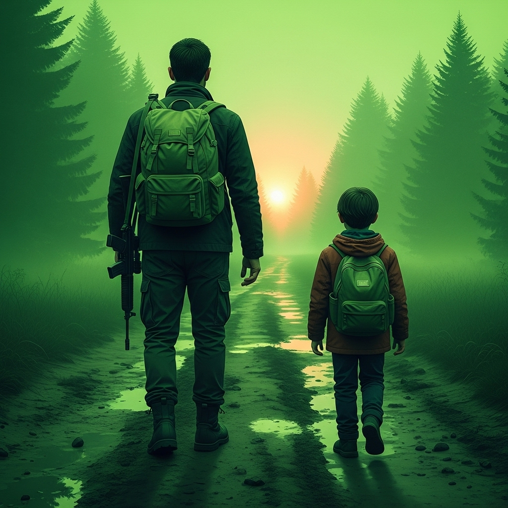

I Miei Videogiochi
Esperimenti che fondono codice e narrativa, dove le tue scelte plasmano la storia.

Il Respiro Trattenuto del Mondo
Una piccola avventura interattiva a scelte con opzioni grafiche standard, CRT e alto contrasto per accessibilità. Ispirata al romanzo "Echi Prima del Silenzio", prequel di The Safe Place.
Scarica Gratis →
The Safe Place
Un'avventura testuale post-apocalittica con elementi GDR. Sopravvivi in un mondo desolato dove ogni scelta conta.
Presto Disponibile
Lemmons
Un puzzle game narrativo che segue le vicende di un gruppo di impiegati intrappolati in un ufficio surreale.
Presto Disponibile